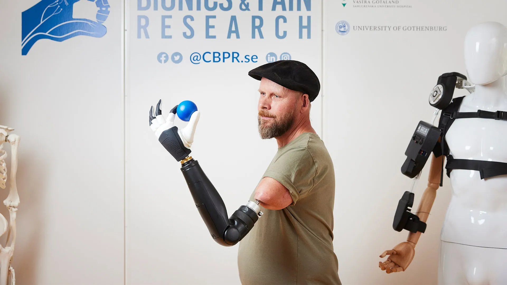

how image recognition can help people see ai / vision · medium how computer vision can describe the world for people who are blind.
 why your next hand could feel real hardware / health · medium the tech behind haptic prosthetics that can pass sensation back to the wearer.
i was terrible at snake, so i built an ai to beat the game for me machine learning · medium how a deep q-learning agent learns snake from scratch.
i was drowning in tasks, so i built jarvis to manage my life automation · medium building a telegram assistant that handles my calendar, email and tasks.